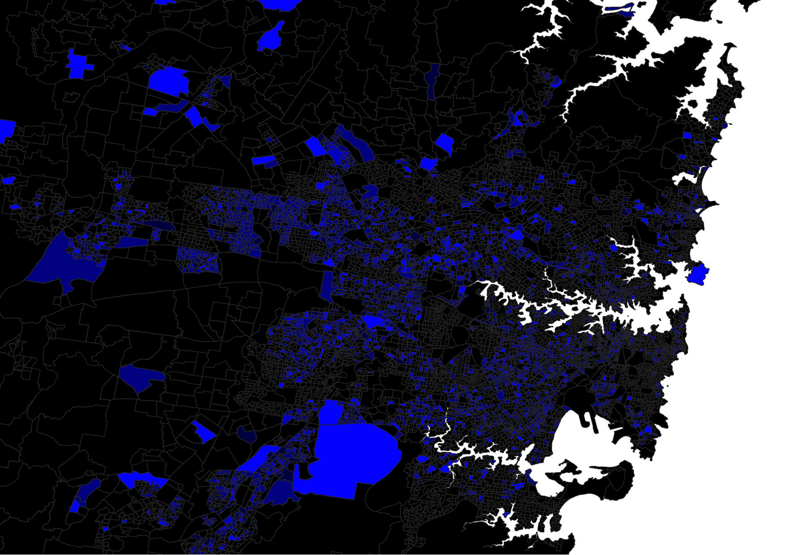

German Males 2011 - 2016
France Males 2016
Italy Males 2011 - 2016
Iran Males 2016
Iraq Males 2016
Turkey Males 2011 - 2016
China Males 2011 - 2016
India Males 2016
Philippines Males 2011 - 2016
Total Personal Income Weekly
“Hey Louie, Hey Louie … but what are you comparing this to” … for those in the back, I’m comparing it to ‘Total Personal Income by area’. Do I need to address the elephant in the room? Of course I fucking do! Women get paid less than men and I don’t need no data to show me that truth. However … it helps paint a picture. So the more vibrant the colour the more money people have in that area
What is Data Journalism?
The only thing in the above heading that jumps at me is ‘Journalism’. I’m immediately transported to the movie ‘Spy Game’ with Robert Redford and Brad Pitt. I’m sure everyone has at some point fantasised about being a spy doubling as a photojournalist and bedding a gorgeous aid worker … anyone, anyone … ok just me then?
Data Journalism combines traditional journalism with a range of digital information, then using those elements to tell a compelling story. Programming automated data gathering, Using software to find data connections between hundreds of thousands of documents; these are just a couple examples of how technology can be used to aid in ‘Data Journalism’. A great example of Data Journalism can be found here Read More
The Dataset
I have been given “Country of Birth by sex” as a dataset and have found it interesting to see how people have chosen where to live. You have the Germans who live predominantly inland and the Chinese who favor close proximity to businesses. Based on data alone it tells me what nationalities and cultures value the most. As the "Legend" is lacking, the more Vibrant the colour, the more people reside in that area.
What would be interesting to see is the reasons behind peoples living choices; Close to their jobs, community based decisions, safety factors etc.